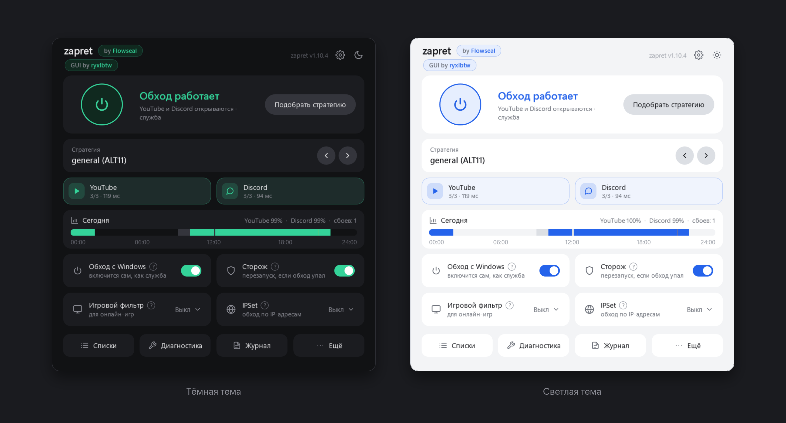
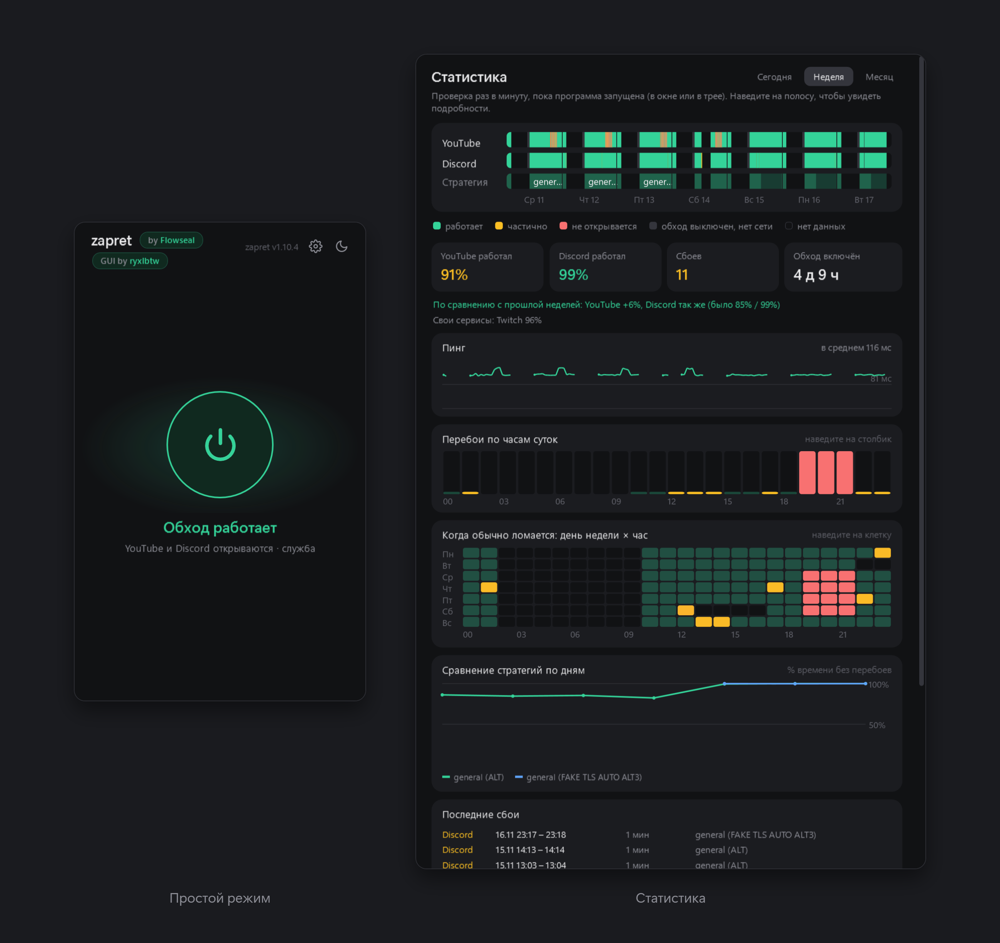

Простой интерфейс для zapret-discord-youtube от Flowseal. Подбирает стратегию, следит, чтобы всё открывалось, и сам скажет, если что-то сломалось.
Скачать ZapretGUI.exe Все версии Windows 10 и 11 · один файл без установки · бесплатно, открытый код (MIT)
Включает и выключает обход. Рядом обычными словами: «Обход работает» или «YouTube не открывается» и что делать.
Проверяет стратегии, как «Run Tests» у Flowseal, и показывает лучшую. Есть быстрый подбор и подбор по расписанию.
Раз в минуту проверяет YouTube и Discord. Если перестали открываться — уведомление из трея, по желанию сам пробует другие стратегии.
Когда работало, а когда нет, на какой стратегии, в какие часы чаще ломается. Сравнение стратегий по дням.
«Проверить сайт» и добавить его в обход одной кнопкой. Свои плашки сервисов на главном экране.
Находит, что мешает: VPN, прокси, AdGuard, неверные часы, подмену DNS, блокировку QUIC — и подсказывает, как исправить.
Трей с мини-панелью, горячая клавиша, профили, пауза, обход вместе с играми, простой режим для родителей.
И программа, и zapret — с проверкой контрольной суммы. Можно вернуть прошлую версию.

service.bat. Если zapret ещё нет — программа предложит скачать его сама.Проверить файл: Get-FileHash ZapretGUI.exe в PowerShell — сумма должна совпасть с ZapretGUI.exe.sha256 из релиза.
Нажмите «Подобрать стратегию». Если не помогло — откройте «Диагностику»: часто мешают VPN, прокси или другая программа обхода.
Это частая ложная тревога: драйвер WinDivert перехватывает трафик, как и вирусы. Добавьте папку zapret в исключения антивируса.
Нет. Она только запускает zapret от Flowseal и проверяет, открываются ли сайты. Код открыт на GitHub.
Настройки → «Обслуживание» → «Удалить всё»: служба, задачи и настройки удалятся. Папку zapret можно удалить вручную.
Остались вопросы — обсуждения на GitHub.